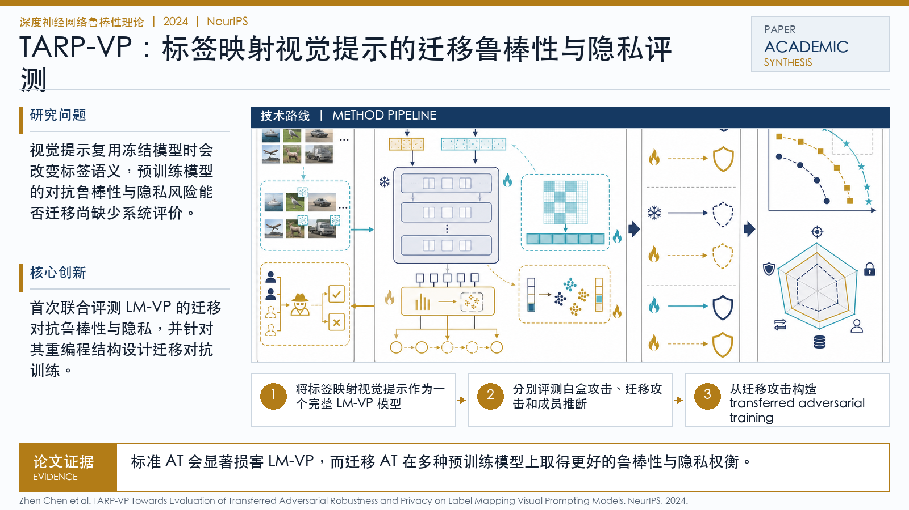

Problem
解决的问题
视觉提示复用冻结模型时会改变标签语义，预训练模型的对抗鲁棒性与隐私风险能否迁移尚缺少系统评价。
Robustness Theory of DNNs · 2024 · NeurIPS
TARP-VP Towards Evaluation of Transferred Adversarial Robustness and Privacy on Label Mapping Visual Prompting Models
Problem
视觉提示复用冻结模型时会改变标签语义，预训练模型的对抗鲁棒性与隐私风险能否迁移尚缺少系统评价。
Value
标准 AT 会显著损害 LM-VP，而迁移 AT 在多种预训练模型上取得更好的鲁棒性与隐私权衡。
Paper-grounded Academic Summary
该代表页依据原文摘要、贡献段与方法图注生成。方法视觉由 ImageGen 按论文证据逐篇绘制，中文研究问题、技术路线、创新点与实验结论采用确定性排版，以保证内容与字符准确。
打开原文 PDF
Technical Route
Innovation